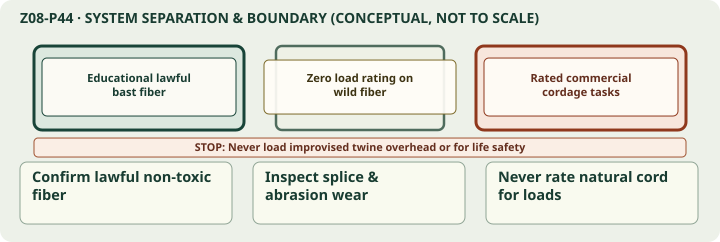

Z08-P44 · Rocks, minerals and materials · New manuscript
Natural Bast Cordage Preparation and Unrated Load Boundaries
Reconcile historical B007A natural cordage material notes with strict conservation laws and zero-load-rating safety boundaries.
When it applies · Supervised educational study of natural fiber cordage limitations.
Equipment · Lawfully collected dead-plant fiber only; maintained commercial cord for real loads.

Actions
- Preserve B007A cordage concepts strictly as non-rated educational material demonstrations using lawfully obtained dead-plant fibers.[R18, K04]
- Inspect twisted natural fibers closely for dry brittleness, uneven thickness, and sharp abrasion points where strands shear rapidly under friction.[R18, K04]
- Use maintained manufactured cordage for any shelter ridgeline, pack lashing, or critical field tie-down rather than improvised bast twine.[R18, K04]
Failure recognition · Trusting hand-twisted plant fibers for heavy loads or overhead tie-downs results in abrupt unannounced parting.[R18, K04]
Verify · Natural fiber samples remain strictly educational and non-load-bearing, with commercial cord carried for field tasks.[R18, K04]
Stop or change course · Stop any attempt to use improvised plant cordage for human weight, climbing, towing, or heavy overhead suspension.[R18, K04, K06]
Evidence and editorial notes
- K04 · USDA Forest Service · Handtools for Trail Work (0523-2810-MTDC) (agency handbook)
- Section: Sharpening, Filing and Handle Maintenance · Conditions: Maintaining cutting edges and wood tool handles in field or shop
Support: Secure the tool firmly before filing or honing, keep fingers behind file guards, preserve factory bevel geometry without overheating steel and replace loose or cracked handles rather than taping them.
Limitations: Field touch-up honing does not correct chipped, cracked or heat-annealed steel blades. · Conflicting evidence: None; separates routine edge maintenance from unsafe handle patching.
Editorial note: Guides sharpening, rust prevention and handle-failure retirement cards. · Specialist reviewer: Tool maintenance and forestry safety
Primary source · checked 2026-11-24 - K06 · NPS · Forces and Tools (current web edition)
- Section: Forces and Tools > Simple Machines and Mechanical Advantage · Conditions: Levers, wedges, inclined planes and friction mechanisms
Support: Simple machines trade force for distance (levers, wedges, pulleys); friction, alignment and material strength limit real-world output below ideal ratios.
Limitations: Ideal mechanical advantage ignores friction losses and breaking strength of ropes or anchors. · Conflicting evidence: None; clarifies physical trade-offs without implying engineered load ratings.
Editorial note: Anchors mechanical-advantage, wedge-splitting and pulley/rigging limit cards. · Specialist reviewer: Mechanical engineering and rigging safety
Primary source · checked 2026-11-24 - R18 · Minnesota DNR · Minnesota Native Plant Communities and Biomes (Current web edition)
- Section: Natural plant fiber harvest limits and conservation ethics · Conditions: Bast fibers, rushes, sedges, and woody stems in regional biomes
Support: Harvesting fibrous plants without landowner permission or in protected native plant communities damages ecosystems and may violate law.
Limitations: Strength of hand-twisted plant cordage varies sharply with retting, moisture, and knots; never assign life-safety loads. · Conflicting evidence: None noted.
Editorial note: Connects Z08 fibers to Z09 load limits and law. · Specialist reviewer: Botanist and materials specialist
Primary source · checked 2026-11-25
Source lineage · Adapted historical material (B007A cordage concepts) · Classification · New manuscript.